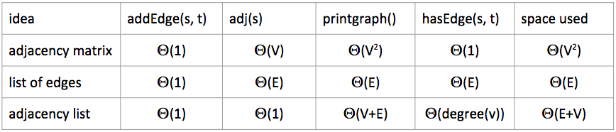

public interface Graph {public Graph(int V); // Create empty graph with v verticespublic void addEdge(int v, int w); // add an edge v-wIterable<Integer> adj(int v); // vertices adjacent to vint V(); // number of verticesint E(); // number of edges...}
Representation 3: represent the graph as an adjacency list (array of lists indexed by vertex number; each vertex's list contains all the vertices that the vertex has edges to)
Runtime for different methods based on representation:

Basic undirected graph adjacency list implementation:
public class Graph {private final int V;private List<Integer>[] adj;public Graph(int V) {this.V = V;adj = (List<Integer>[]) new ArrayList[V];for (int v = 0; v < V; v++) {adj[v] = new ArrayList<Integer>();}}public void addEdge(int v, int w) {adj[v].add(w);adj[w].add(v);}public Iterable<Integer> adj(int v) {return adj[v];}}
Let's say we want to make a function Paths that takes in a graph and starting node, and then finds the path from that start node to any of the nodes of the graph, if it exists
public class Paths {public Paths(Graph G, int s); // Find all paths in G starting from sboolean hasPathTo(int v); // is there a path from s to v?Iterable<Integer> pathTo(int v); // path from s to v (if any)}
We can implement this with DFS:
marked of size edgeTo of size edgeTo[4] = 1Implementation like this:
public class DepthFirstPaths {private boolean[] marked; // true iff vertex v connected to sprivate int[] edgeTo; // previous vertex from paprivate int s; // starting node spublic DepthFirstPaths(Graph G, int s) {... // initialize variablesdfs(G, s); // in constructor, do the dfs search recursively}private void dfs(Graph G, int v) {marked[v] = true;for (int w : G.adj(v)) {if (!marked[w]) {edgeTo[w] = v;dfs(G, w);}}boolean hasPathTo(int v) {return marked[v] == true;}Iterable<Integer> pathTo(int v) {// Start at v, travel to edgeTo[v] and add it to the list to return// Repeat till at s...}}